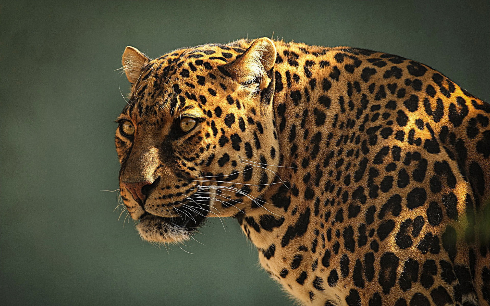
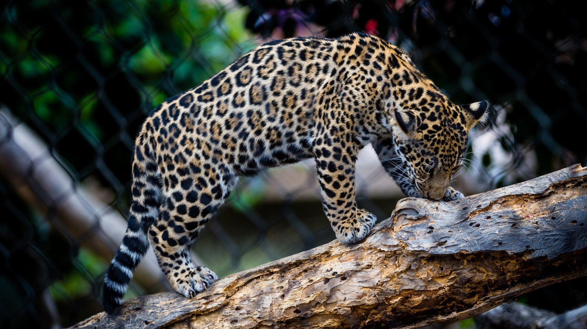
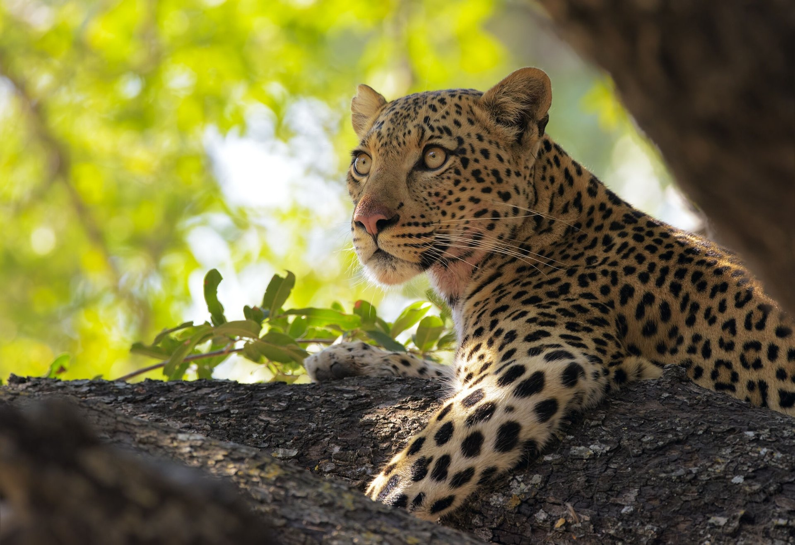
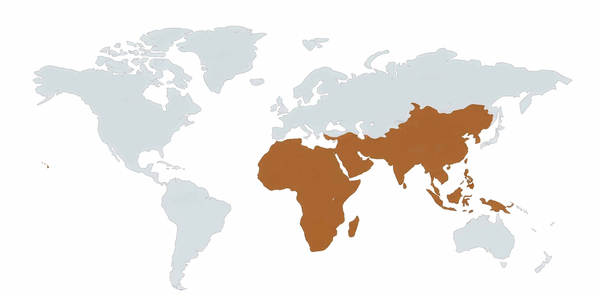

Leopardo
Panthera pardus
O leopardo (Panthera pardus) é um dos felinos mais ágeis, adaptáveis e furtivos do planeta, destacando-se pela sua incrível capacidade de sobrevivência em diversos habitats de África e da Ásia. Dotado de um corpo musculoso, patas curtas e robustas e uma longa cauda que o ajuda a manter o equilíbrio, este magnífico predador possui uma bela pelagem amarelada ou dourada adornada com manchas escuras em forma de anel, conhecidas como rosetas. A sua extraordinária força e destreza física permitem-lhe dominar a arte da discrição, tornando-o num dos caçadores mais eficientes da natureza.
Habitat Natural

O leopardo é o mais versátil dos grandes felinos, habitando uma enorme variedade de ecossistemas que vão desde savanas abertas, florestas tropicais densas e bosques arbustivos até zonas montanhosas rochosas e regiões semi-áridas. Ao contrário de outros grandes predadores que dependem de territórios específicos, o leopardo adapta-se com facilidade à presença humana e a diferentes altitudes. Passa grande parte do dia escondido no silêncio da vegetação densa ou abrigado na ramagem alta das árvores, onde descansa em total segurança.
Dieta
O leopardo é um carnívoro estrito, solitário e um predador de emboscada com hábitos crepusculares e noturnos. A sua alimentação é extremamente variada, incluindo antílopes de médio porte, gazelas, javalis, primatas e pequenos mamíferos ou aves. Uma das suas caraterísticas mais marcantes é a capacidade de içar presas que pesam muito mais do que ele próprio para o topo das árvores, protegendo assim o alimento contra o roubo de outros predadores concorrentes, como leões ou hienas.
Curiosidades
- O leopardo é um trepador excecional, passando grande parte do tempo nas árvores onde descansa, come e esconde as suas presas com uma agilidade impressionante.
- Possuem uma força descomunal para o seu tamanho, sendo capazes de carregar para cima de uma árvore uma presa com o dobro do seu próprio peso.
Os nossos Leopardos
No Zoo Jonçela, um magnífico e discreto par de leopardos — o elegante macho Leonardo e a atenta fêmea Zara — desperta a admiração de todos os visitantes com a sua postura majestosa. Com 6 anos de idade, o Leonardo é um macho robusto que mede cerca de 1,4 metros de corpo (com uma cauda de quase 90 cm) e pesa perto de 65 kg. A Zara, com 5 anos, apresenta uma compleição ligeiramente mais esguia, medindo 1,3 metros e pesando cerca de 50 kg. Ambos partilham um recinto arborizado e enriquecido com plataformas elevadas, onde demonstram toda a sua agilidade, força e instintos naturais.